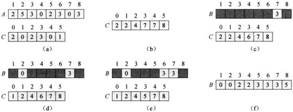

计数排序和基数排序 Counting Sort and Radix Sort (Distribution Sort)
Counting Sort and Radix Sort(Distribution Sort)
1. Counting Sort
我们先假设待排序序列各元素均在区间[0, k]上，即对于 Counting Sort，必须事先知道数的分布范围。
计数排序的思想是：在待排序序列中，如果我们能统计出有多少元素小于或等于某一个元素，我们也就知道了该元素的正确位置。例如，对于待排序序列{2,5,3,0,2,3,0,3}，我们统计出有8个元素小于等于5（包括5自己），那么5这个元素就应该被排序到第8位。
下面给出算法的伪代码描述：
其中数组A[1n]是待排序数组；数组B[1n]用来存放已排好序的元素。C[0~k]用来存放上面所说的统计数（具体的说C[i]就表示在数组A中，小于或等于i的元素的总个数(这里的 C 指的是在下面例图(b)中累加后得到的 C)）。
下面这幅图描述的是对序列{2,5,3,0,2,3,0,3}排序的过程：

注意这里 A/B 数组都是从索引 1 开始，C 数组从索引 0 开始，如果 A/B 也是从索引 0 开始，那么在下图步骤 8-10，往 B 中存放时索引要减 1 即：B[C[A[j]]-1] = A[j]。
在伪代码中，第23行时间代价θ(k)；第45行时间为θ(n)；第78行时间为θ(k)，第1012行时间为θ(n)。因此，总的运行时间是θ(k+n)。当k= O(n)时，运行时间为θ(n)。
可以看出，计数排序的下界优于我们上面论证的比较排序算法的下界时间Ω(nlgn)。这是因为计数排序并不是比较排序算法。事实上，在代码中从未出现比较某两个元素大小的代码。相反，计数排序是使用输入元素的实际值来确定其在数组中的位置。此时，比较排序算法的模型对计数排序不再适用。
代码实现:
1 | public static void main(String[] args) { |
Why don’t we always use counting sort?
2. Radix Sort
从低位往高位进行逐次排序，每次对未经过排序的最低位1-digit 进行排序，当排序高位数字时对低位已排序的结果可能会有变动，这是合理的，高位大自然应该往后放（反之，从高位往低位排就不可以）。对于十进制数，每次只需要申请 10 个空间即可存放这些数字，因为1-digit十进制数不会超过 10。
注意，这里在对某位进行排序时采用的是 StableSort(基数排序需要一种稳定的排序算法作为子程序，在这里使用计数排序)，所以假设两个数相等，高位排序结果并不会影响低位排序的结果；
对这 1-digit 进行排序使用什么呢？对十进制来说，k大小是 1-10。
But the number bits in a computer world is very large, so how to sort 1 million 64-digit numbers?
- Treat as four-digit radix 216 numbers
- Can sort in just four passes with radix sort!
Radix Sort 需要先对每个数最低位进行比较，之后在得到的结果基础上再对次低位进行排序，为了得到这一个个的位，使用 $10^{exp}$，其中 exp 从 1 到 n；这种方式需要依次对 10、100、1000…取余，另外一种思路是通过对 0000…0001, 0000…0010， 0000…0100等进行按位与(&)操作,得到本次需要比较的 1-digit number.
Radix Sort 示例：
1 | 基数排序 |